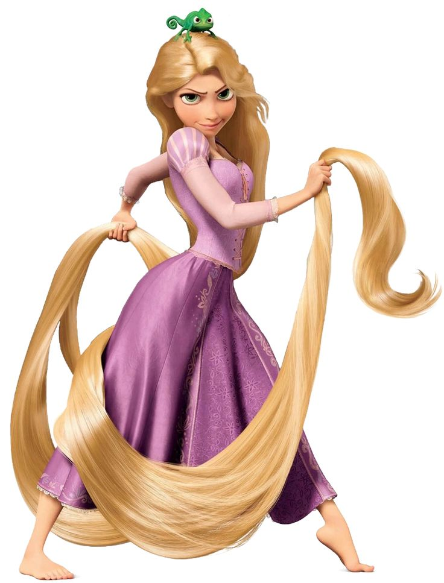
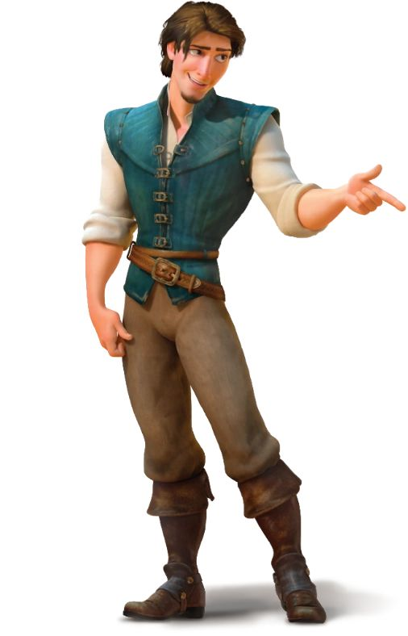
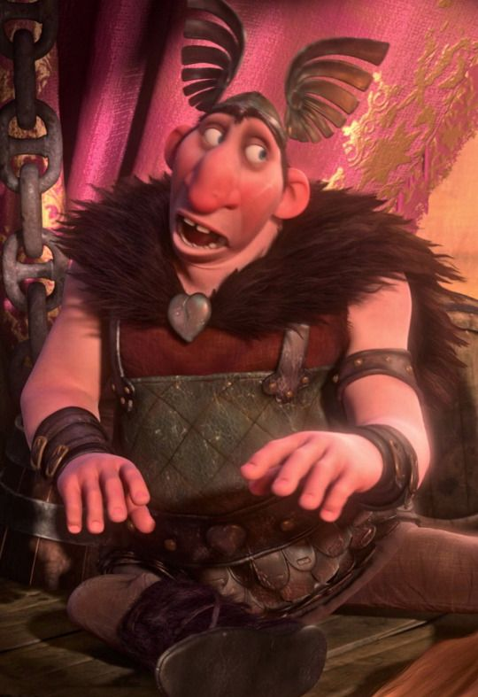
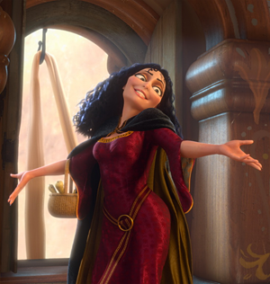
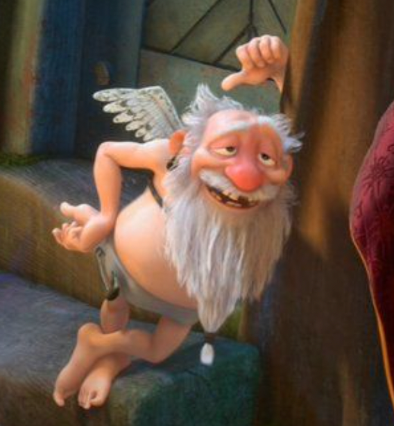
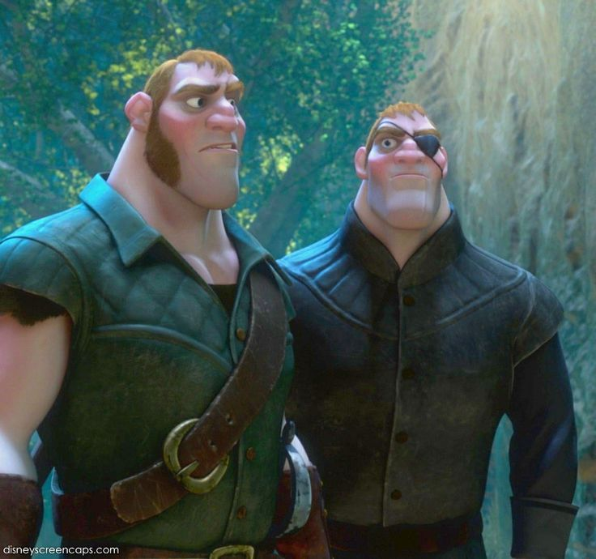
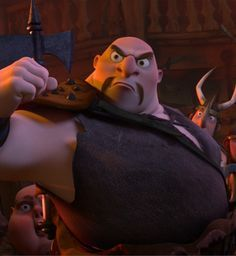

Tangled merupakan film animasi musikal tahun 2011 yang disutradarai oleh Nathan Greno dan Byron Howard dan diproduksi oleh Roy Conli, John Lasseterdan Glen Keane dari Walt Disney Animation Studios. Naskah film ini ditulis oleh Dan Fogelman berdasarkan dongeng dari Jerman berjudul Rapunzel karya Brothers Grimm. Tokoh di film ini diisi oleh suara Mandy Moore, Zachary Levi dan Donna Murphy.
Sinopsis
Kisahnya bercerita tentang Rapunzel, seorang putri yang diculik oleh Mother Gothel saat masih bayi dan dibesarkan di sebuah menara terpencil. Mother Gothel menggunakan rambut ajaib Rapunzel, yang memiliki kekuatan penyembuhan dan awet muda, untuk mempertahankan kecantikan dan keeksaannya sendiri. Rapunzel terisolasi dari dunia luar dan mendambakan petualangan, menghabiskan hari-harinya dengan melukis dan bermimpi melihat lentera yang muncul setiap tahun pada hari ulang tahunnya. Suatu hari, Flynn Rider, seorang pencuri yang sedang dicari-cari, masuk ke menara Rapunzel. Rapunzel membuat kesepakatan dengan Flynn dimana dia akan membantunya melarikan diri dari menara dan melihat lentera, dengan imbalan Flynn menjadi pemandunya. Bersama-sama, mereka memulai petualangan seru dan penuh tantangan, menghadapi Mother Gothel yang mengejar mereka dan berusaha merebut Rapunzel kembali. Sepanjang perjalanan, Rapunzel dan Flynn membangun ikatan yang kuat dan menemukan jati diri mereka masing-masing. Rapunzel belajar tentang dunia luar dan kekuatannya sendiri, sementara Flynn menyadari bahwa ada lebih banyak hal dalam hidup daripada harta dan kekayaan.
Tokoh / Karakter
No.
Tokoh
Gambar
Nama
1.

Rapunzel
2.

Flyyn Rider
3.

Big Nose Thug
4.

Mother Gothel
5.

Short Thug
6.

Stabbingthon Brother
7.

Hook-Hand Thug
Film Favorit Lainnya
The Good Dinosaur
The little mermaid
Barbie
Drama Korea
Drama Korea antara lain yaitu:
Star Up
The K2
Youth of May
Dan masih banyak lagi...
Cuplikan
Rapunzel, gadis muda nan lugu, dikurung ibunya yang sangat protektif di atas menara. Harapannya untuk kabur dan melihat dunia luar menjadi kenyataan saat seorang pencuri baik hati memanjat menaranya